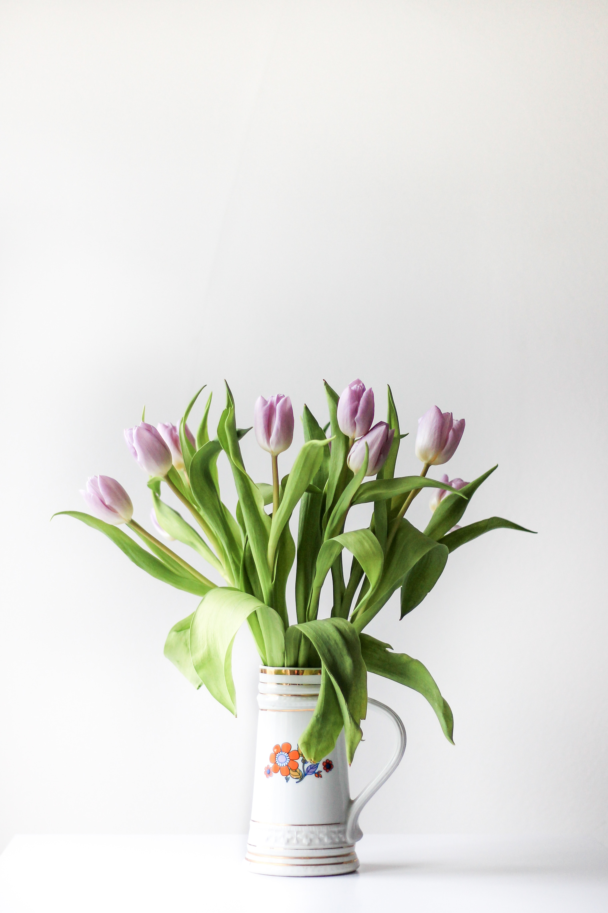
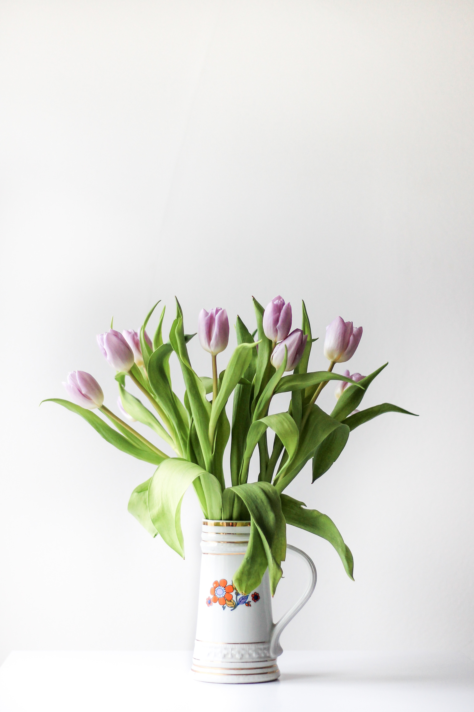

Flower Collection
Potted flower arrangements can make a house look lovely and welcoming. Potted flowers bring color and liveliness to any space, whether they are arranged in hanging baskets, on tabletops, or on windowsills. Every taste and style can be satisfied by using one of the many flower species that are readily accessible, from the traditional elegance of roses to the vibrant and upbeat appeal of sunflowers.

 


Tips of gardening
Gardening tips are useful for both novice and experienced gardeners to enhance their skills and achieve a successful harvest. These tips can include everything from soil preparation and plant selection to watering and pest control. By following gardening tips, you can create a beautiful and bountiful garden that will provide joy and nourishment for years to come.
First Tip
Plan and prepare: Before starting a garden, it's important to plan what you want to grow and where you want to plant it. Consider the amount of sunlight and soil conditions needed for each plant and make sure you have the appropriate tools and equipment to get started.
Second Tip
Start with good soil: Good soil is the foundation of a healthy garden. Make sure your soil is well-draining and rich in nutrients. If your soil is poor, consider adding compost or other organic matter to improve its quality.
Third Tip
Water properly: Most plants need consistent and adequate watering to thrive. Make sure to water your garden deeply and regularly, especially during hot and dry weather. Avoid overwatering, as it can lead to root rot and other plant diseases.